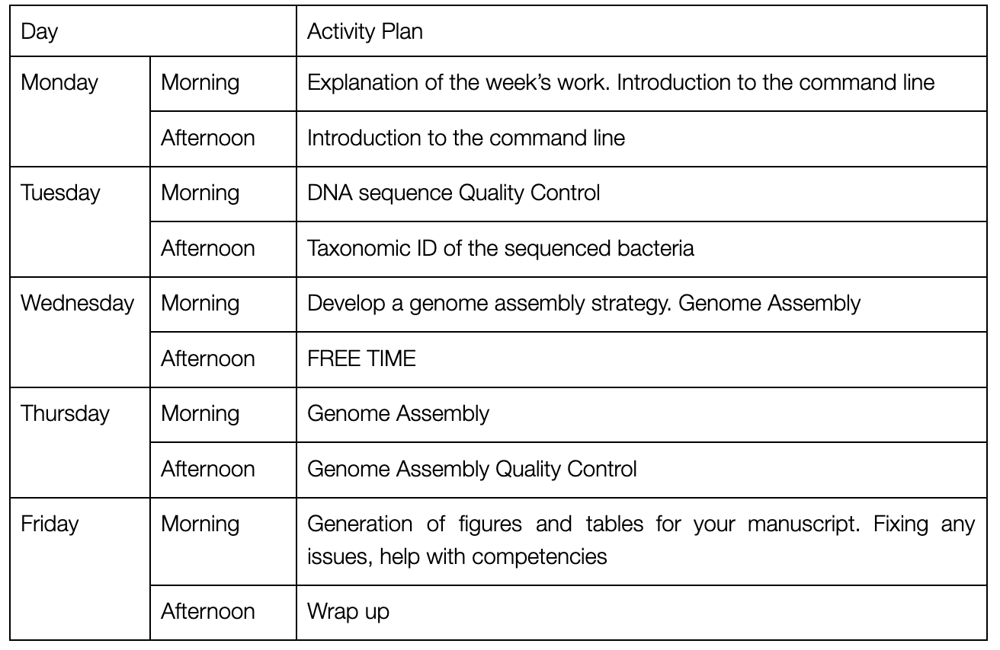

Week C manual
Contents
Week C manual#
Overview of Week C#

NB this timetable may be a little fluid to avoid timetable clashes and to respond to surprisingly slow/quick data analyses.
Goals of Week C#
This week you will
Learn key bioinformatics skills to easily process large amounts of data
Characterise and understand the data from the nanopore sequencer
Quality control the data
Assemble bacterial genomes
Quality control the genomes and describe them suitable for a paper
Bioinformatics Analyses#
Week C is going to be computational. It is important that I stress again that I will teach you everything you need to know to analyse your data. You do not need to know programming, you do not need to be a computer expert, you only need to get actively involved and work hard.
This week you will quality control your data, check it, assemble a bacterial genome and then check and quality control that assembly. This should produce some key results for your final manuscript, which can be represented by figures and tables generated this week.
We will be working in a computer lab on campus. You will be using Jupyter notebooks on one of the University of Hull High-Performance Computing servers. Many of you will have used these before in Genetic Analysis of Molecular Evolution modules but if not please let me know and I will catch you up very easily in 5 mins. I will talk you through getting set up on Monday morning and make sure everyone is OK. At some point we may need to break out to use other specialist bioinformatics computers, but I will talk about this.
Assessed Portfolio Activities#
Lab Notebook#
This week you will continue with your lab notebook. You will keep good notes, record methods and parameters used. This will be essential information for writing up your work. You will ask for help and feedback from academic staff if unsure how to record analyses. Your Jupyter notebooks for analysis as also an experimental record, like a lab book, make sure that you keep a copy.
Competencies#
This week you will have two competencies to document. These will be described in more detail during the week, and in the bioinformatics notebooks to be provided. You will of course be taught all the skills to demonstrate these competencies
Demonstrate competency in command line skills by completing competency tasks A, B and C and submitting your Jupyter notebook to Canvas as a PDF.
Produce appropriate tabular and/or graphical descriptions of your sequence and assembly data. You should get this checked, and then submit it as part of your competency portfolio.
NB you must submit a separate PDF to Canvas under the assignment “Week C unix competency”. We will then grade this as part of the competency assignment using the rubric for that assignment. It’s really hard to get this unix work into the same competency document, so this way you won’t have to wrangle it and can just upload a PDF which is much easier.
Learning and Study#
We will teach you bioinformatics with a range of approaches. You will work through activity notebooks in pairs, with discussion and support from staff. We will have whole class seminar discussions on aspects of theory and practice. Lectures, seminar presentations, and journal clubs will be introduced as time allows in the second half of the week.
Working with sequence data#
We have set up a working environment for you on the University’s High Performance Computer (HPC).
The analyses will use the unix command line as it is the easiest and time efficient method. This will be combined with other programs in a Jupyter notebook.
You will need to be very clear about the methods used and keep the beautiful figures generated by your analyses for later use.
Questions#
Asking good questions means that you can demonstrate a good result
What organism am I sequencing? Are both these isolates E. coli? What makes a ‘good’ genome?
Getting the Data and Notebooks#
Monday morning will include a tutorial on downloading the Jupyter notebooks, data, and everything else that you need. We will make sure that you are set up.
The command you will need to download the materials is:
git clone https://github.com/davelunt/BGS.git
The full genome data is big, and not included in the repository. We will make sure that you have this available when you need it.
You have mostly been working with small test datasets to build your analysis skills. These test datasets are ~1% of your sequence data and the results you get are very valid, but not quite as extensive as they could be. We have then analysed (using the same exact commands) the whole dataset and provided the outputs for you. We have uploaded these files to Canvas. It is perfectly OK for you to treat these “whole dataset outputs” as the outputs of your own work, they pretty much are. I think it is OK to just say “our analysis produced report X” and then show the full dataset report.